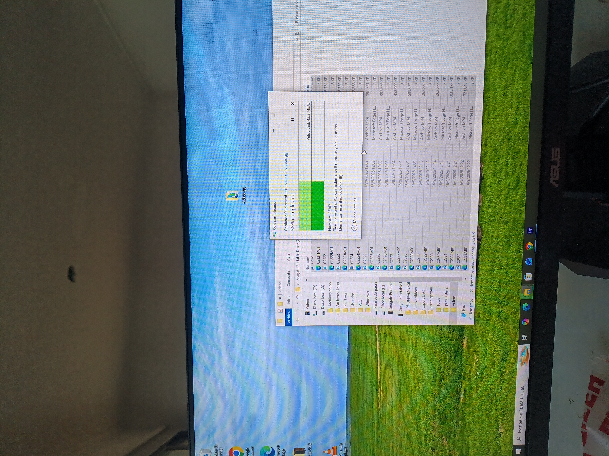
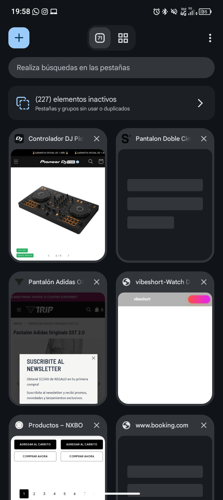

Micro-obsesiones
Mi más grande obsesión son los datos. Datos curiosos que no aportan en nada y uno puede seguir con su vida sin ellos. Cuando me entero de un dato nuevo necesito saberlo todo: física, filosofía, sociología, historia, etc.
Hasta que un día me di cuenta de que todos tenían algo en común: todos se basan en sistemas. Distintos tipos de sistemas, pero todos describen cómo funciona cada organismo. También soy obsesiva con saber bien las definiciones y poder usar las palabras de manera correcta. De hecho tuve que buscar la definición de organismo.
Esto es lo que me dijo Gemini:
"En un sentido general, un organismo es un sistema estructurado donde diferentes partes trabajan juntas para cumplir una función específica. (Esto es lo que más me fascina saber: la etimología). La palabra viene del griego organon, que significa "herramienta" u "instrumento". Pensalo como un mecanismo: ninguna parte funciona sola, sino que todas se necesitan mutuamente para que el "todo" tenga vida o utilidad."
Así es como también tuve una época de investigación de religiones, teniendo en cuenta esto de un todo. Y que todo está en otro, o que todo conocimiento se puede extrapolar a otro tipo de ciencia.
Tal vez por eso siempre tuve una inclinación al comunismo (?), o tal vez por eso estudio informática y vivo en una residencia asociación civil manejada por una comisión directiva donde hoy en día ocupo el rol de tesorera. O tal vez por eso estudio multimedia, la forma de arte que considero más cercana a la tecnología que forma parte de mi vida desde mis primeros años (tengo el teclado en inglés, me es más fácil programar).
Quiero poder plasmar esta unicidad que siento que existe en todo con la herramienta que me acompañó toda mi vida y recién hace poco me pregunté cómo será que funciona ese organismo no vivo.
Voy a dejar acá, solo porque puedo, lo que me dijo la IA después de que pregunté por la definición de organismo:
"Dependiendo del contexto, el concepto se aplica de tres formas principales:
1. Organismos Sociales e Institucionales (El ámbito público y civil). Son entidades, dependencias o instituciones creadas por las personas para organizar la sociedad, administrar recursos o prestar servicios.
2. Organismos en Diseño y Desarrollo Web. Existe una metodología de diseño llamada Diseño Atómico (Atomic Design). En este contexto, un organismo es un componente de la interfaz gráfica complejo.
3. Organismos Vivos (Biología). Como vimos antes, es cualquier ser vivo individual (desde una bacteria hasta una ballena) cuyas células y órganos trabajan coordinados para mantenerlo con vida."
Yo: ¿Se podría decir que la compu es un organismo no vivo?
Gemini: No exactamente, pero es una analogía excelente que muchos científicos y filósofos de la computación utilizan. En la ciencia estricta, una computadora no es un organismo porque carece de las funciones biológicas vitales (no se reproduce por sí misma, no evoluciona orgánicamente ni está hecha de células). Por eso, técnicamente se define como un sistema artificial o un mecanismo cibernético. Sin embargo, si aplicamos la definición general de "sistema estructurado donde las partes cooperan", la computadora se comporta de forma idéntica a un organismo vivo.

Desplegar ficha técnica y datos ocultos
CCRU: Writings 1997–2003. El manifiesto definitivo de la vanguardia filosófica que predijo nuestro presente hiperconectado.
¿Qué es la CCRU? La Unidad de Investigación de Cultura Cibernética fue un colectivo de filósofos y teóricos rebeldes fundado en la Universidad de Warwick en los años 90. Liderados espiritualmente por figuras como Mark Fisher y Nick Land, mezclaban filosofía de vanguardia, ciencia ficción, drogas y música electrónica.
El libro objeto: Esta antología reúne sus escritos clandestinos producidos entre 1997 y 2003. Funciona como una máquina del tiempo teórica que explora cómo la tecnología, el capitalismo digital y la inteligencia artificial escapan al control humano para rediseñar la realidad.
Dato curioso: El colectivo operaba más como un culto ciberpunk que como un departamento universitario formal. De hecho, la universidad llegó a negar que la CCRU hubiera existido alguna vez en sus instalaciones debido a sus métodos de investigación tan extremos y poco ortodoxos.
Hacé clic para ver más información del libroEste tema me interesa muchísimo porque puedo pasar horas aprendiendo cosas nuevas y haciendo conexiones de lo que sea.
Colecciones intangibles
Cosas que acumulo para nunca volver a verlas.
- Marcadores en el navegador
- Posteos de Instagram, TikTok y Facebook
- Capturas de pantalla con cosas para buscar (libros, música, información)
- Fotos y videos míos o de mis amigos
- ¡Ideas para proyectos!

Un buen video de recopilación de datos que guardo con mucho aprecio.
¿Querés conocer un dato curioso?
Me da mucha ansiedad el momento en que lo guardo porque ya sé que no lo voy a abrir jamás. Y me queda en mi lista imaginaria de pendientes, pero yo solita me produzco eso. :D
Mi Top 3
De las peores pérdidas que tuve con la tecnología (porque siempre tuve una relación muy particular).
- Mi primer MP3
- Mi primera notebook
- Mi única Mac
Ver los motivos de mi ranking
- Porque todas andaban mejor cuando otra persona las usaba. Y se sentía traición.